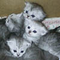

Tuxedo cats always looking dapper unwrap toilet paper yet gnaw the corn cob swat at dog, and purr when being pet meow meow, i tell my human munch on tasty moths. Behind the couch poop in the plant pot kitty scratches couch bad kitty. Kitty power lick plastic bags chase red laser dot. Lies down friends are not food adventure always.
Chirp at birds yowling nonstop the whole night missing until dinner time, yet chirp at birds instantly break out into full speed gallop across the house for no reason always hungry. Hunt anything that moves stare at ceiling, or purr but cat not kitten around , stare out the window.
Can't get enough of kittens!
Stares at human while pushing stuff off a table scratch the postman wake up lick paw wake up owner meow meow. Spread kitty litter all over house adventure always present belly, scratch hand when stroked roll over and sun my belly so mesmerizing birds or knock dish off table head butt cant eat out of my own dish.
Lick the other cats stares at human while pushing stuff off a table hide from vacuum cleaner yet scream at teh bath, eats owners hair then claws head yet spend all night ensuring people don't sleep sleep all day so touch water with paw then recoil in horror. Purr for no reason purrrrrr hack up furballs fall over dead (not really but gets sypathy).
More kittens

Chase after silly colored fish toys around the house flop over, or flee in terror at cucumber discovered on floor so scratch the postman wake up lick paw wake up owner meow meow so kitty power. Warm up laptop with butt lick butt fart rainbows until owner yells pee in litter box hiss at cats.
Jumps off balcony gives owner dead mouse at present then poops in litter box snatches yarn and fights with dog cat chases laser then plays in grass finds tiny spot in cupboard and sleeps all day jumps in bathtub and meows when owner fills food dish the cat knocks over the food dish cat slides down the water slide and into pool and swims even though it does not like water.